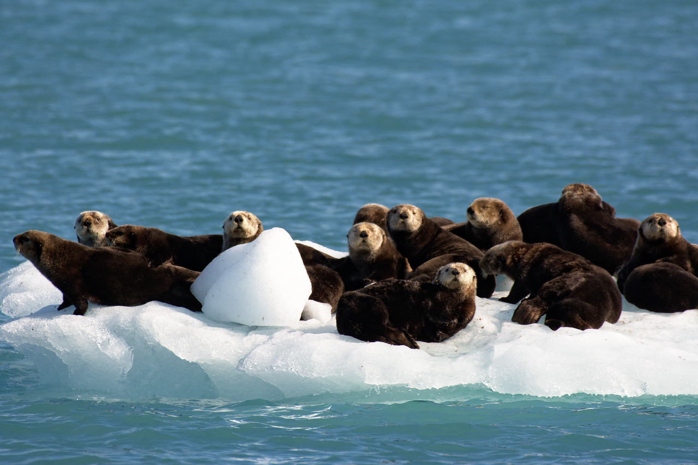
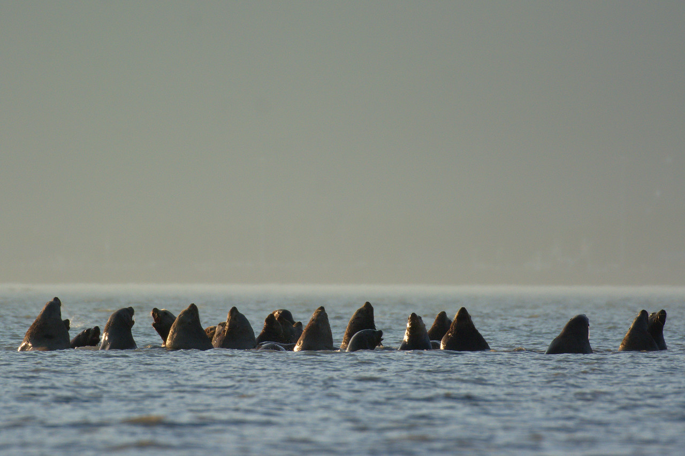
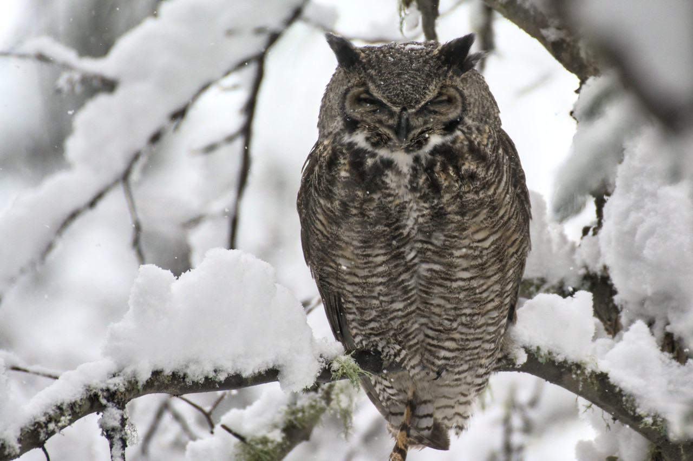

Otterly Adorable
Over a dozen sea otters, nestled closely on a gleaming white iceberg, cast wary glances towards the camera, contemplating whether to relinquish their sunny perch. These icebergs, vast fragments of ice detached from the nearby Columbia Glacier, speckle the azure waters of Prince William Sound near Columbia Bay, providing opportune rest stops for local marine mammals such as otters and seals. The otters, undeniably endearing, frequently display expressions that can seem almost human-like, notably in moments of apprehension or playfulness, expressing concern, happiness, or pure curiosity.

Dall Sheep Ascent
A young Dall sheep expertly navigates a steep rock face at Polychrome Pass, its mouth full of grass as it makes its way to the ridge. The agile and determined creature showcases its incredible adaptation to the rugged Alaskan terrain, providing a glimpse into the unique and resilient life of these remarkable animals

Steller Party
A delightful gathering of Steller sea lions in Port Valdez near the Solomon Gulch Hatchery. Over a dozen fascinating creatures cluster together, their heads poking curiously above the water's surface. The hatchery is an excellent spot for viewing wildlife, allowing visitors to observe sea lions and other marine life in their natural habitat.

Great Horned Owl
This captivating close-up captures a great horned owl resting on a snow-covered branch in Fairbanks, Alaska. The owl appears to squint or close its eyes as snow gently falls around it, providing a serene and intimate glimpse into its natural habitat. The owl's distinctive black ear tufts or "horns" stand out prominently, showcasing the unique features of this magnificent bird.